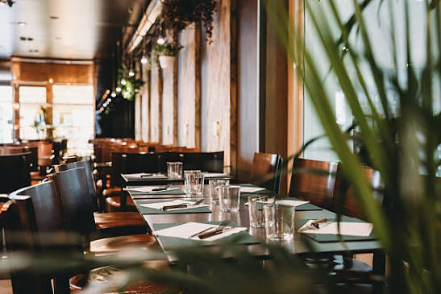

Guía gastronómica
Descubre los sabores de Cañas
Conoce diferentes lugares donde comer en Cañas, Guanacaste. Encuentra información sobre restaurantes, cafeterías, platillos y productos.
CONOCER LUGARES
Conoce nuestra selección
Lugares gastronómicos


¿Necesitas más información?